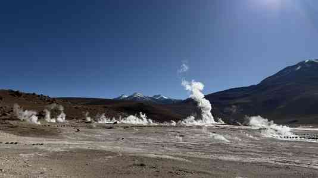
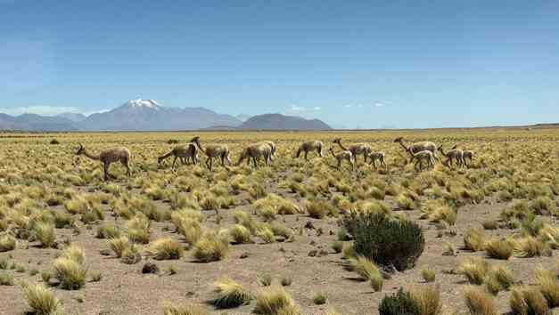

Reisebericht Südamerika (Februar - März 2026)
1. Buenos Aires (Ankunft)
Unterkunft: Hotel Palladio
- Zimmer 806: Große Raumaufteilung, Ausblick auf die Hinterhöfe.
- Hotel-Restaurant: Angebot an Fleischgerichten (Lamm), gebackenem Käse; Verfügbarkeit alkoholfreier Getränke (z. B. Corona Cero).
Orte und Sehenswürdigkeiten
- Av. 9. Julio: Sichtung des Obelisken und Porträts von Eva Perón.
- Plaza del Mayo: Besuch der Kathedrale (inkl. Wachablösung) und des Präsidentenpalasts Casa Rosada.
- Hafenbereich: Moderne Fußgängerbrücke und Museums-Fregatte.
- Stadtzentrum: Foto-Hotspot an den Buchstaben "B" und "A" (aus Sträuchern geformt); Teatro Colón.
- Kultur- und Architektur: Buchhandlung Teatro El Atheneo (inkl. Musikabteilung im UG); Friedhof Cementerio de la Recoleta; Floralis Generica.
- La Boca: Touristenmeile; Stadion der Boca Juniors inklusive Museum und Adidas-Shop.
- San Telmo: Zahlreiche Verkaufsstände in den Straßen; Bank mit Mafalda-Figur.
- Kirche und Museum: Francisco de Assisi.
Gastronomie & Unternehmungen
- Tangoshow: Drei-Gänge-Menü; Aufführungen von Tänzern und Sängern.
2. Santiago de Chile
Unterkunft: Hotel Almasur
- Zimmer 63 (6. Etage): Schlichte Ausstattung.
- Frühstück: Buffet-Stil, vergleichbar mit Motel One.
Orte und Sehenswürdigkeiten
- Stadtzentrum: Durchquerung langgestreckter Parkanlagen; Plaza de Armas inklusive Kathedrale.
- Cerro Santa Lucía: Aufstieg zum Torre mit Panoramaausblick über Santiago.
- Museen: Museo de Bellas Artes.
- Cerro San Cristóbal: Auffahrt via Seilbahn (Station Oasis) über eine Mittelstation zum Gipfel; Statue der Jungfrau mit Altarraum; Abfahrt via Funicular (Cable Car).
Gastronomie (Food-Tour)
- Fischmarkt: Krabbenpastete mit Käse überbacken, Aioli und Salsa-Sauce.
- Spezialitäten: Nationalgetränk "Mote con Huesillo" (getrockneter Pfirsich); chilenische HotDogs; originale Empanadas.
- Restaurant Viva La Vida: Ceviche (Lachs, rote Zwiebelringe, Koriander) und Pastel de Choclo (Maispastete auf Fleisch); Dessert: Celestino mit Eiscreme.
3. San Pedro de Atacama
Unterkünfte
- Zelt-Unterkunft: Tent 2; Ausstattung mit Dusche; Abendessen im hoteleigenen Restaurant (Beef-Steak medium-rare, Creme Brûlée).
- Hotel Explora: Zimmer 47; inkl. Guide-Beratung für Exkursionen; Restaurant á la Carte (Pork Ribs, Lamb Shank).
Exkursionen und Natur
- Laguna Chaxa (Sala de Atacama): Salzsee-Landschaft.
- Pukara de Quitor: Inka-Stätte (nur von unten einsehbar); Aufstieg zu Aussichtspunkten (ca. 240 Höhenmeter).
- Valle de Arcoíris: Farbenprächtige Berge (Höhe bis 3480m); Petroglifos de Yerbas (Felsenzeichnungen).
- Huayra (Mars Valley): Wanderung auf einem Plateau; Abstieg in Dünen (Barfuß-Passagen); ca. 60 Höhenmeter Aufstieg.
- Hot Pools: Wanderung durch Schlucht mit Wasserlauf und Pampasgras; Thermalbecken (Temperatur ca. 33 Grad).
- Cordillera de la Sal: Salzwüste; Begehung eines trockenen Flussbetts; stillgelegte Salzmine mit alten Fahrzeugresten.
- Red Stone Lagoon: Höhenlage knapp unter 4000m; ca. 4 km Wanderung entlang der Lagune.
- Laguna Miscantes & Laguna Miniques: Höhe 4150m; unterirdische Verbindung der Seen.
- El Tatio Geysire: Höhe ca. 4270m; zwei Felder mit heißen Quellen und Lithium-Silikat-Ablagerungen; Sichtung von Vicunias.


- Quebrada de Chulakao (Devil's Throat): Canyon-Wanderung (ca. 6 km); beeindruckende Schluchtenbildung.
- Sunset Licancabur: Höhe knapp 4000m; Beobachtung des Sonnenuntergangs.
- Star Gazing: Beobachtung des Sternenhimmels mittels Teleskop (Sichtung von Jupiter und Orion-Nebel).
Unternehmungen
- Reitausflug: ca. 1,5 Stunden durch die Wüste.
4. Patagonien (Punta Arenas & Puerto Natales)
Unterkünfte
- Domos (Puerto Natales): Großer Dombau über zwei Etage (Upgrade); einfache Verpflegung (Avocado, Käse, Thunfisch).
- Hotel Rio Serrano (Torres del Paine): Zimmer mit Spa-Zugang (Pool, Sauna); Außenbereich mit Grillstation für Lamm.
- Hotel Plaza (Punta Arenas): Klassisches Hotel ohne Aufzug; Zimmer im älteren Stil.
Nationalpark Torres del Paine
- Mirador Cuernos: Wanderung via Mirador Salto Grande (Wasserfall); Distanz 6,7 km, 217 Höhenmeter.
- Condor Lookout: Wanderung über 3,1 km; 258 Höhenmeter Aufstieg.
- Lago Grey: Sichtung von Andencondoren; Beobachtung treibender Eisberge; Aussichtspunkt auf den Gletscher.
- Laguna Azul: Sichtung von Guanakos und Andencondoren; Mirador Sierra Masle.
Orte in Punta Arenas
- Cementerio Sara Braun: Friedhofsanlage.
- Stadtzentrum: Plaza de Armas mit Magellan-Denkmal; Palazzo Sara Braun.
5. Expedition Cruise (Stella Australis)
Schiff und Ausstattung
- Kabine 321 (Deck 3): Geräumige Aufteilung.
- Deck-Einrichtungen: Rezeption (Deck 2), Sky-Lounge (Deck 4) mit Brückenzugang; Restaurant (Deck 1).
Route und Landgänge
- Ainsworth-Bucht: Begehung eines feuchten Waldes; Sichtung von Füchsen und Biber-Schäden an der Vegetation.
- Gallegos-Gletscher: Fahrt durch Eisschollen-Felder; Beobachtung von Gletscherabbrüchen.
- Pia-Gletscher: Aufstieg zum Lookout (ca. 45 Min.).
- Beagle-Channel: Fahrt entlang der Gletscher-Allee.
- Kap Hoorn: Umfahrung bei extremen Windbedingungen (Böen bis 135 km/h).
- Wulaia-Bucht: Wanderung zum Lookout; Besuch eines Museums.
6. Ushuaia
Stadt und Umgebung
- Hafengebiet: Schiffswracks; Ushuaia-Schriftzug.
- Stadt: Besuch einer Kirche; Souvenirshops; Hard Rock Café.
- Tourist-Office: Behördengang zur Passstempelung.
7. El Calafate & El Chalten
Unterkünfte
- El Calafate: Einfache Unterkunft; freundlicher Empfang.
- B&B Confin Patagonico (El Chalten): Zimmer mit Safe und Kühlschrank.
Wanderungen und Natur
- El Chalten: Laguna Capri; Loop über den Mirador Fitz Roy (ca. 10 km, 424 Höhenmeter).
- Mirador Los Cóndores & Las Aguilas: Rundweg (6,1 km, 220 Höhenmeter).
- Glaciero Perito Moreno: Nationalpark mit Shuttlebus-System; metallische Stege (Rundwege); Beobachtung großer Gletscherabbrüche.
Gastronomie
- Parilla La Oveja Negra: Spezialität Lamm.
- Panadería Don Pepe: Warme Sandwiches mit Tomate, Käse, Schinken und Hähnchenschnitzel.
8. Buenos Aires (Abschluss)
Unterkunft: Boutique Hotel Magnolia
- Innenarchitektonisch hochwertig gestaltet.
Orte und Gastronomie
- Ecoparque: Parkanlage in der Stadt.
- Moshu Treehouse: Café-Besuch.
- Parrilla Don Julio: Spezialität Ojo de Filet (Ribeye, 500g pro Portion), gegrillte Pommes (Papa Fritas).